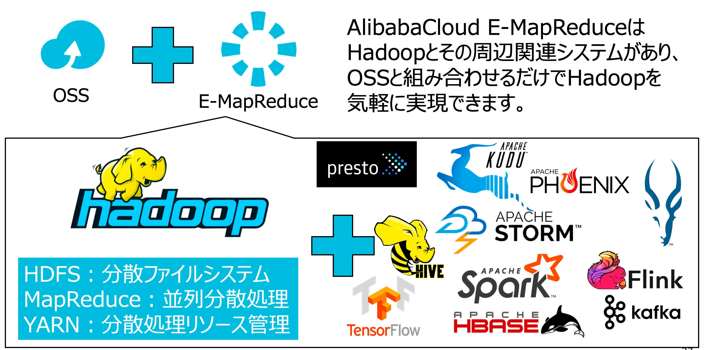
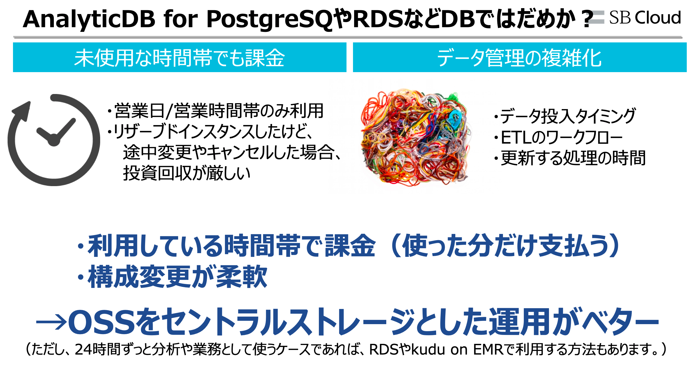
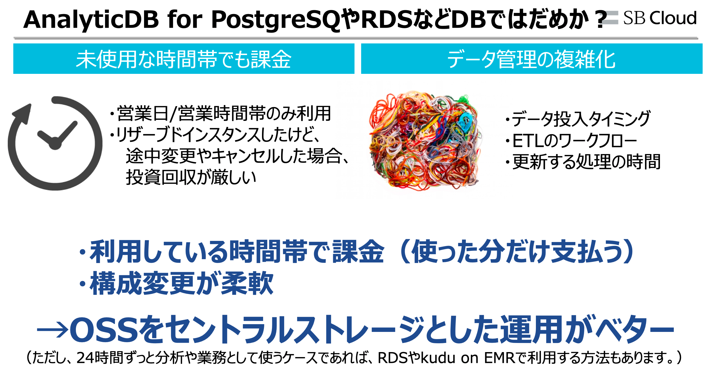
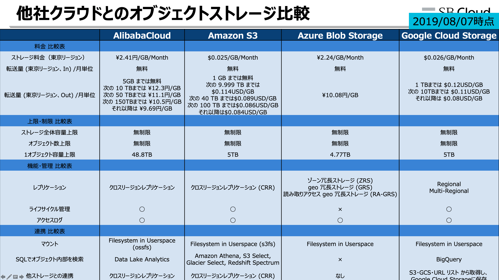
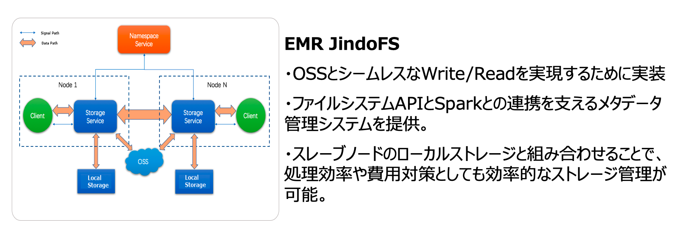
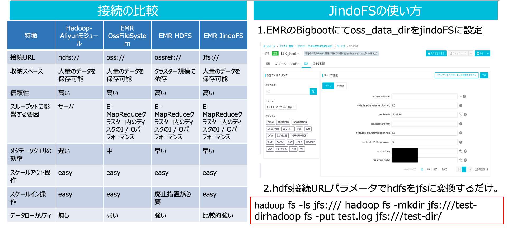

OSSとE-MapReduce
OSSとE-MapReduce
前述、Hadoop概要、DWHなどBigDataの基本的なことを説明しました。今回はAlibabaCloudで簡単にBigDataができることを記載します。 AlibabaCloudには様々なBigDataプロダクトがあります。BigData絡みだけでこのプロダクトがあります（RDB系、分散DB系、NoSQL系は除外） これらは順次追って本テクニカルサイトにて手法、ケースを載せます。
| icon | プロダクト名 | 説明 | メモ |
|---|---|---|---|
 |
MaxCompute | 大規模データウェアハウジングに対応できるデータ処理プラットフォーム | |
 |
E-MapReduce | E-MapReduce、Hadoopクラスタの展開や運用が可能 | |
 |
RealtimeCompute | Apache Flink を最適化したマネージドリアルタイムデータ処理プラットフォーム | |
 |
DataWorks | 大規模データを処理するオンラインIDEサービス | |
 |
LogService | データ収集、クリーニング、分析、視覚化、アラートを実現するマネージドサービス | |
 |
DataV | DataV、データの可視化 | |
 |
QuickBI | クラウド上のユーザー向けに調整されたBIサービス | |
 |
Machine Learning PAI | 機械学習と深層学習のデータ処理、モデルトレーニング、サービス展開、予測のためのプラットフォーム | |
 |
Elasticsearch | データ分析、データ検索、機械学習、グラフ、APMなどを実現するマネージドサービス | |
 |
GraphAnalytics | リレーショナルネットワークの分析サービス | 中国サイトのみ |
 |
DataLakeAnalytics | ServerlessでOSS、データベース、NoSQLなどのデータソースでデータを分析するマネージドサービス | |
 |
OpenSearch | 分散検索エンジンプラットフォーム | 中国サイトのみ |
| Hologram | PBレベルのデータに対し1秒未満で応答する超高速OLAPマネージドサービス | 中国サイトのみ |
今回はHadoopのファーストステップとして、E-MapReduceを使ってみます。E-MapReduceはHadoop分散モードを構築するとき必要となるマスターノード・スレーブノードのクラスタの作成、初期設定らプロビジョニング（Javaインストール、Hadoopインストール、各種設定etc）を自動で実行してくれます。同時にクラスタ管理および使用するための統合フレームワークが使えるため、Hadoopや周辺エコシステムを簡単に利用することができます。
E-MapReduceを利用するメリット
- 自力でHadoopおよびエコシステムの環境を構築しなくていい
- マスタノード/スレーブノードなどクラスタ管理など、運用をしなくていい
- 使った分だけ料金を払うpay-as-you-go、利用期間に応じて料金を払うsubscriptionがあり、利用用途に応じて節約することが可能

E-MapReduceはOSSのデータを使って処理したり、処理結果をOSSへ保存したりします。もちろんOSSをセントラルストレージとして、直接SQLクエリを投げてOSSからデータ取得することもできます。BigDataはデータが増えれば増えるほど維持費、処理のコストが跳ね上がってしまいます。例えば、OSSに処理したいDataLakeデータ、DWHなどが100TBあるとして、これをECSなど一時的なストレージに持たせるのはコスト的にも負荷が大きいです。そのため、OSSを全体的にHubとしたBigData運用が経済的にもお得です。
 

上記、大規模なBigDataを運用するときOSSをセントラルストレージとするもう一つの理由があります。AlibabaCloudのOSSはDataLake、DWHを構築するのに必要な機能や大規模な分散サービスに必要な要件を備えています。SLA99.99999999%、高い堅牢性、データロストなし、他サービスとの親和性etc… 加えて、先述した通り料金が安いというメリットを踏まえると、これ以上の選択肢はないと思います。

まとめると、OSSをセントラルストレージとしたBigData運用をすると以下のメリットがあります。
- ストレージと計算処理を分離できるため、データ消失のリスクがない
- OSSをセントラルストレージとすることで、全体的なコスト削減が見込める
- E-MapReduceの処理結果データをRDSやDataVなど、他プロダクトへ回すことが可能

他社クラウドとのOSS比較としては以下の通りになります。AlibabaCloud OSSはAWS S3、GCP Cloud Storage、Azure Blob Storageとあまり謙遜ないです。

しかし、AlibabaCloudのE-MapReduceは他社クラウドと比べてかなり多くのHadoopエコシステムを搭載しています。AWS、GCP、Azure、Clouderaの様々なサービス+α 以上の機能があり、BigDataに関するあらゆること（OLTP、OLAP、FaaS、コンテナ運用、分散で深層学習、ストリーミングで機械学習など）が詰まっています。ImpalaにKuduなど、他社クラウドサービスでは実現できないこと、また構築が困難なケースに対し解決アプローチとなるエコシステムがたくさんあります。こちらが比較表です。（2019/08/20時点）
| ALBB EMR | AWS EMR | GCP Dataproc | Azure HDInsight | Cloudera CDH | ||
|---|---|---|---|---|---|---|
| Hadoop | Version | 3.22.0 | 5.26.0 | 1.4.13-debian9/ubuntu18 2019/08/23 | HDInsight 4.0 | CDH 6.3.0 |
| Apache Hadoop | 2.8.5 | 2.8.5 | 2.9.2 | 3.1.1 | 3.0.0 | |
| HDFS | 2.8.5 | 2.8.5 | 2.9.2 | 3.1.1 | 3.0.0 | |
| YARN | 2.8.5 | 2.8.5 | 2.9.2 | 3.1.1 | 3.0.0 | |
| Apache Hive | 3.1.1 | 2.3.5 | 2.3.5 | 3.1.0 | 2.1.1 | |
| Apache Spark | 2.4.3 | 2.4.3 | 2.4.3 | 2.3.1、2.4 | 2.4.0 | |
| Knox | 1.1.0 | |||||
| Zeppelin | 0.8.1 | 0.8.1 | 0.8.1 | |||
| Tez | 0.9.1 | 0.9.2 | 0.9.2 | 0.9.1 | ||
| Ganglia | 3.7.2 | 3.7.2 | ||||
| Apache Pig | 0.14.0 | 0.17.0 | 0.17.0 | 0.16.0 | 0.17.0 | |
| Apache Sqoop | 1.4.7 | 1.4.7 | 1.4.7 | 1.4.7 | ||
| Bigboot | 2.0.0 | |||||
| OpenLDAP | 2.4.44 | |||||
| Hue | 4.4.0 | 4.4.0 | 4.3.0 | |||
| Apache HBase | 1.4.9 | 1.4.10 | 2.0.1 | 2.1.4 | ||
| HBase Indexer | 1.5 | |||||
| Apache Zookeeper | 3.5.5 | 3.4.14 | 3.4.13 | 3.4.6 | 3.4.5 | |
| Presto | 0.221 | 0.22 | 0.215 | |||
| Apache Impala | 2.12.2 | 3.2.0 | ||||
| Apache Flume | 1.8.0 | 1.9.0 | ||||
| Livy | 0.6.0 | 0.6.0 | 0.5 | |||
| Superset | 0.28.1 | |||||
| Ranger | 1.2.0 | 1.1.0 | ||||
| Flink | 1.7.2 | 1.8.0 | ||||
| Storm | 1.2.2 | None(Old Version 1.1.0) | ||||
| Phoenix | 4.14.1 | 4.14.2 | 5.0.0 | |||
| Analytics Zoo | 0.5.0 | |||||
| SmartData | 2.0.0 | |||||
| Apache Kudu | 1.10.0 | 1.10.0 | ||||
| Apache Oozie | 5.1.0 | 5.1.0 | 4.3.1 | 5.1.0 | ||
| JupyterHub | 0.9.6 | |||||
| MXNet | 1.4.0 | |||||
| Mahout | 0.13.0 | 0.9.0 | ||||
| Hcatalog | 2.3.5 | - | ||||
| Anaconda | 5.2.0 | |||||
| GCS connector | 1.9.17-hadoop2 | |||||
| Hive WebHCat | 2.3.2 | |||||
| Kerberos | 1.15.1 | |||||
| Apache Mahout | None(Old Version 0.9.0) | |||||
| Apache Ambari | 2.7.0 | |||||
| Mono | 4.2.1 | |||||
| Apache Avro | 1.8.2 | |||||
| Apache Crunch | 0.11.0 | |||||
| Apache DataFu | 1.1.0 | |||||
| Apache Parquet | 1.9.0 | |||||
| Parquet-format | 2.4.0 | |||||
| Apache Sentry | 2.1.0 | |||||
| Cloudera Search | 1.0.0 | |||||
| Kite SDK | 1.0.0 | |||||
| Apache Solr | 7.4.0 | |||||
| Apache Accumulo | 1.9.2 | |||||
| Cloudera Navigator | 3.0.0 | |||||
| ALBB EMR | AWS EMR | GCP Dataproc | Azure HDInsight | Cloudera CDH | ||
| Kafka | Version | 3.22.0 | ||||
| Apache Zookeeper | 3.5.5 | 3.4.14 | 3.4.13 | 3.4.6 | 3.4.5 | |
| Ganglia | 3.7.2 | 3.7.2 | ||||
| Kafka | 1.1.1 | 1.1.1、2.1 | 2.2.1 | |||
| Kafka-Manager | 1.3.3.16 | |||||
| Knox | 1.1.0 | |||||
| Ranger | 1.2.0 | 1.1.0 | ||||
| OpenLDAP | 2.4.44 | |||||
| ALBB EMR | AWS EMR | GCP Dataproc | Azure HDInsight | Cloudera CDH | ||
| Data Science | Version | 3.16.0 | ||||
| HDFS | 2.7.2-1.3.2 | 2.8.5 | 2.9.2 | 3.1.1 | 3.0.0 | |
| YARN | 2.7.2-1.3.2 | 2.8.5 | 2.9.2 | 3.1.1 | 3.0.0 | |
| Apache Spark | 2.3.2-1.0.1 | 2.4.3 | 2.4.3 | 2.3.1、2.4 | 2.4.0 | |
| Apache Zookeeper | 3.4.13 | 3.4.14 | 3.4.13 | 3.4.6 | 3.4.5 | |
| Zeppelin | 0.8.0 | 0.8.1 | 0.8.0 | |||
| ApacheDS | 2.0.0 | |||||
| Ganglia | 3.7.2 | 3.7.2 | ||||
| Tensorflow on YARN | 1.0.0 | |||||
| Analytics Zoo | 0.2.0 | |||||
| Jupyter | 4.4.0 | 4.4.0 | ||||
| Apache Hive | 2.3.3-1.0.3 | 2.3.5 | 2.3.5 | 3.1.0 | 2.1.1 | |
| TensorFlow | 1.8.0 | 1.13.1 | ||||
| Hue | 4.1.0 | 4.4.0 | 4.3.0 | |||
| ALBB EMR | AWS EMR | GCP Dataproc | Azure HDInsight | Cloudera CDH | ||
| Druid | Version | 3.22.0 | ||||
| HDFS | 2.8.5 | 2.8.5 | 2.9.2 | 3.1.1 | 3.0.0 | |
| Druid | 0.14.2 | 0.13.0 | ||||
| Apache Zookeeper | 3.5.5 | 3.4.14 | 3.4.13 | 3.4.6 | 3.4.5 | |
| Ganglia | 3.7.2 | 3.7.2 | ||||
| OpenLDAP | 2.4.44 | |||||
| YARN | 2.8.5 | 2.8.5 | 2.9.2 | 3.1.1 | 3.0.0 | |
| Superset | 0.28.1 |
そういった意味では、AlibabaCloudのBigDataはかなり力が入ってることが伝わると思います。MaxComputeにHologramなど、他のプロダクトの力もありますが、E-MapReduceだけでも強力な武器となっているのはAlibabaCloudだからこそです。 AlibabaCloudのE-MapReduceアーキテクチャを少しみてみます。以下のような構成図となっています。（ここには書いていないHadoopエコシステムが多数ありますがそこは割愛します）

上記の図のように、E-MapReduceはECSインスタンスのローカルティスク上に構築され、HDFSは中間データの格納先として利用されます。E-MapReduceのデータ読み出しや書き込みは基本的にOSSに対して行われます。 またE-MapReduceには様々なファイルシステムをサポートしています。
- HDFS接続
- ファイルシステム接続
- EMR接続
- JindoFS接続
E-MapReduceにはJindoFSアーキテクチャを実装しており、OSSに対しシームレスな読み込み/書き込み処理が実現できます。それだけでなく、OSSにあるDWHやHDFSなどでのメタデータの共有、管理ができるため、E-MapReduceで高速処理することができます。

JindoFS接続の使い方も簡単です。通常URLパスをjfsへ書き換えるだけです。実際の利用方法は別の章にて記載いたします。

まとめ
本章ではOSSとE-MapReduceの相性、素晴らしさを説明しました。Hadoopに親しんでる人ならばE-MapReduceだけで簡単にETLできることや、OSSをセントラルストレージとしたOLTP、OLAP、機械学習、深層学習、ストリーミングができるのはAlibabaCloudのみです。
加えて、本章では触れていませんでしたがHadoopに詳しくない、BigDataが初めての人でもマネージドサービスとしてMaxCompute、DataWorksプロダクトサービスもあります。このプロダクトだけでBigData運用を自己完結することも可能です。
このように、AlibabaCloudのBigData運用は非常に優位性があることを理解いただければと思います。